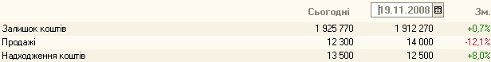
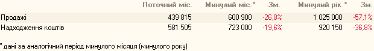
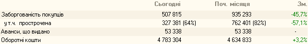

Будь-який керівник, приймаючи управлінські рішення, ґрунтується на інформації про те, що відбувається в його підрозділі, компанії, бізнесі? Для прийняття управлінських рішень необхідно одержувати оперативну інформацію. Регулярний контроль фінансових результатів основних видів діяльності організації дозволяє передбачати виникнення несприятливої ситуації й згладити вплив негативних зовнішніх факторів на фінансовий стан підприємства, особливо в умовах кризи
Для допомоги керівникам при прийнятті управлінських рішень в умовах кризи створені антикризові звіти 1С:Бухгалтерії 8 для України. Тепер керівник став повноправним користувачем програми.
Розділ Оперативні дані показує зміни показників діяльності.



У розділі Оперативні дані зібрані найбільш критичні зведені дані про роботу організації. Для одержання детальної інформації призначений розділ Звіти для керівника.
В умовах економічної кризи, керівника організації в першу чергу хвилює недолік коштів , необхідних для планових розрахунків з бюджетом, кредитними установами й контрагентами.
У звіті Залишки коштів показані залишки коштів на розрахункових рахунках і в касі на певну дату, а також відображені суми коштів , виданих підзвітним особам. Недолік коштів на рахунках на момент здійснення планових платежів може бути обумовлений рядом причин: зниження продажів по організації по номенклатурних групах, порушення графіка погашення заборгованості покупцями й т.д.


Для аналізу динаміки надходження коштів по статтях скористаємося звітом Надходження коштів . Надходження показується в розрізі статей.
Перевірити витрати коштів за попередній період допоможе звіт Витрата коштів.

У звіті відбивається витрата коштів з каси й з розрахункових рахунків. Витрата показується в розрізі статей
По статті Витрати з підзвітними особами (витрачене) відбивається сума коштів , по якій відзвітувалися підзвітні особи за період. Контролювати суму заборгованості підзвітних осіб перед організацією можна за допомогою звіту Залишки коштів.
Аналіз зміни витрати коштів по статтях у порівнянні з минулими періодами дозволити виявити різкі коливання й запобігти їх у майбутньому.
Звіти блоку Розрахунки з покупцями допоможуть проаналізувати зміни заборгованості покупців.

Звіт Динаміка заборгованості покупців показує зміни заборгованості покупців по організації за період. Дані приводяться без деталізації по контрагентах.

У звіті Заборгованість покупців відбивається заборгованість і сума авансу детально по покупцях на початок і кінець обраного періоду, а також рух за період - збільшення й погашення боргу. Покупці у звіті відсортовані по убуванню величини боргу на кінець періоду
Звіт Заборгованість покупців дає уявлення про загальну суму заборгованості по покупцях і не показує потенційні ризики у взаєминах з кожним окремим контрагентом. Про неблагонадійність боржника свідчить не тільки й не стільки сума заборгованості, скільки проміжки між датами її виникнення й погашення, а також виконання умов договору по строках оплати. Тому не варто зневажати інформацією, що міститься у звітах Заборгованість покупців по строках боргу та Прострочена заборгованість покупців.

Звіт Заборгованість покупців по строках боргу призначений для аналізу інформації з періодів (інтервалам) виникнення боргу покупців.
Покупці у звіті відсортовані по убуванню величини боргу на дату звіту.

У звіті Прострочена заборгованість покупців відбивається сума простроченої заборгованості по покупцях. У звіті приводиться порівняння величини простроченої заборгованості на поточну дату з величиною на початок місяця й на початок року.
У програмі можна встановити єдиний строк оплати (відстрочки) по всіх договорах з покупцями. Поряд із цим по окремих договорах можна встановити строк оплати, що відрізняється від загальновстановленого.
Затримка оплати покупцями може привести до несвоєчасного погашення нашою організацією заборгованості перед постачальниками. Для планування оплат постачальникам, залежності від наявних у підприємства засобів, призначені звіти групи Розрахунки з постачальниками.

Звіт Динаміка заборгованості постачальникам показує зміна заборгованості постачальникам по організації за період. Дані приводяться без деталізації по контрагентах.

У звіті Заборгованість постачальникам відбивається заборгованість і сума авансу детально по постачальниках на початок і кінець обраного періоду, а також рух за період - збільшення й погашення боргу. Постачальники у звіті відсортовані по убуванню величини боргу на кінець періоду.
Криза неплатежів може бути обумовлена як зовнішніми, що не залежать від підприємства факторами, так і внутрішніми, до числа яких можна віднести конкурентоспроможність продукції, що випускається (наданих послуг, проданого товару). Підвищення якості й зниження ціни, що здатні підвищити конкурентні переваги підприємства, обмежуються такими факторами, як собівартість і прибутковість кожного виду діяльності й підприємства в цілому. Таким чином, недолік коштів може бути також викликаний:
• Неоптимальною ціною товару (продукції, робіт, послуг);
• Високою собівартістю виду діяльності;
• Неефективним використанням оборотних активів підприємства
У кожному разі, навіть якщо аналіз руху грошових коштів і заборгованості показав, що стан підприємства ще не настільки поганим, як могло здатися на перший погляд, проте , певна оптимізація діяльності не буде перешкодою. Щоб вибрати шляхи оптимізації, необхідно звернутися до даних звітів розділу Загальні показники.

У звіті Продажі відбивається сума продажів по основних видах діяльності організації в розрізі номенклатурних груп. На підставі даних програми можна проаналізувати зміну продажів за період
У суму продажів включається виторг по відвантажених товарах або наданих послугах, незалежно від того, надійшла оплата від покупців або ні.
Навіть досить високі показники продажів ще не свідчать про фінансову стійкість підприємства, високої прибутковості діяльності. Цю інформацію керівник може одержати, аналізуючи дані звіту Доходи та витрати (прибуток/збиток).

Звіт Доходи та витрати (прибуток/збиток) містить інформацію про прибутки (збитки) по основних видах діяльності. На підставі даних програми можна проаналізувати динаміку доходів, витрат, а також прибутку або збитку за період.
При формуванні звіту за місяць, що ще не закритий, прибуток (збиток) розраховується без обліку витрат, які відбиваються в програмі наприкінці місяця. Наприклад, витрати на оплату праці. Остаточна величина прибутку (збитку) буде визначена після обліку всіх витрат поточного місяця.

У звіті Обігові кошти показана структура оборотних коштів організації. За допомогою звіту можна проаналізувати питому вагу кожної статті в загальній величині оборотних коштів на початок і кінець періоду.
Істотна частка дебіторської заборгованості в складі оборотних коштів може свідчити про високий ступінь залежності фінансового стану від платоспроможності покупців. Істотна питома вага статей Товари, Сировина й матеріали як на початок, так і на кінець періоду, у сукупності з низькими показниками зміни окремих номенклатурних позицій сигналізує про слабкий взаємозв'язок служб постачання й збуту
Для підвищення ефективності аналізу діяльності організації рекомендуємо ознайомиться зі статтями розділу Антикризовий аналіз на інтернет-ресурсі БУХ.1С. Розділ Антикризовий аналіз періодично поповнюється новими актуальними статтями./P>